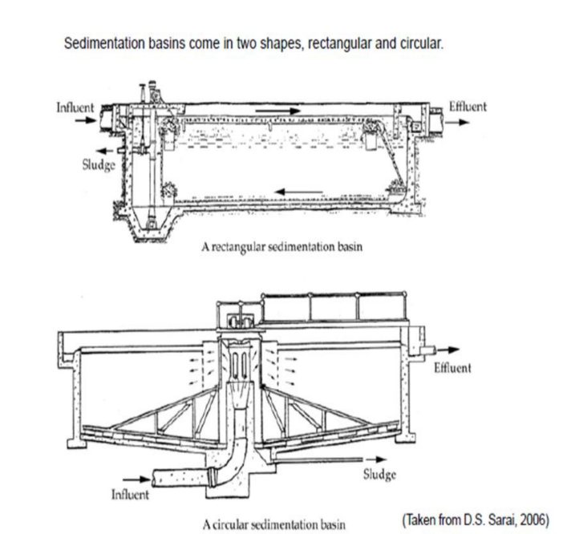

Sedimentation
Definition of sedimentation:
Sedimentation is a physical water treatment process used to settle out suspended
solids in water under the influence of gravity.
Basics:
Suspended solids (or SS), is the mass of dry solids retained by a filter of a given porosity
related to the volume of the water sample. This includes particles of a size not lower than
10μm.
Colloids are particles of a size between 0.001 nm and 1 nm depending on the method of
quantification.
Due to electrostatic forces balancing the gravity, they are not likely to settle naturally
The limit sedimentation velocity of a particle is its theoretical descending speed in clear
and still water.
In settling process theory, a particle will settle only if:
1. In a vertical ascending flow, the ascending water velocity is lower than the limit
sedimentation velocity.
2. In a longitudinal flow, the ratio of the length of the tank to the height of the tank
is higher than the ratio of the water velocity to the limit sedimentation velocity.
There are four process for sedimentation:
Two of them are according to the type of particles:
1) Settling of Discrete Particles
Sedimentation is removal of discrete particles in such low concentration that each
particle settles freely without interference from adjacent particles (that is,
unhindered settling). if the concentration of the solutions is lower than 500 mg/L
total suspended solids, sedimentation will be considered discrete. [10]
Concentrations of raceway effluent total suspended solids (TSS) in the west are
usually less than 5 mg/L net. TSS concentrations of off-line settling basin effluent
are less than 100 mg/L net. [11] The particles keep their size and shape during
discrete settling, with an independent velocity. With such low concentrations of
suspended particles, the probability of particle collisions is very low and
consequently the rate of flocculation is small enough to be neglected for most
calculations. When a particle settles in a fluid it accelerates until the drag force due
to its motion is equal to the submerged weight of the particle. At this point, the
particle will have reached its terminal velocity, Vp. A diagram for settling of an
idealized spherical particle. Vp is the particle settling velocity (m/s); D is the drag
force; W is the submerged weight of the particle; d is the diameter of the particle
(m); Ap is the projected area of the particle normal to the direction of motion (m2);
"p is the volume of the particle (m3); r is the density of the particle (kg/m3); rp is
the fluid density (kg/m3); m is the dynamic viscosity of the fluid (N.s/m2); and CD
is the drag coefficient.
2) Settlement of flocculent particles
in a horizontal sedimentation tank, some particles may not follow the diagonal line
while settling faster as they grow. So this says that particles can grow and develop
a higher settling velocity if a greater depth with longer retention time. However,
the collision chance would be even greater if the same retention time were spread
over a longer, shallower tank. In fact, in order to avoid hydraulic short-circuiting,
tanks usually are made 3–6 m deep with retention times of a few hours.
The other two are according to the concentration of particles:
1) Zone-settling behavior (hindered settling)
As the concentration of particles in a suspension is increased, a point is reached
where particles are so close together that they no longer settle independently of one
another and the velocity fields of the fluid displaced by adjacent particles, overlap.
There is also a net upward flow of liquid displaced by the settling particles. This
results in a reduced particle-settling velocity and the effect is known as hindered
settling. There is a common case for hindered settling occurs. the whole suspension
tends to settle as a ‘blanket’ due to its extremely high particle concentration. This
is known as zone settling, because it is easy to make a distinction between several
different zones which separated by concentration discontinuities. represents a
typical batch-settling column tests on a suspension exhibiting zone-settling
characteristics. There is a clear interface near the top of the column would be
formed to separating the settling sludge mass from the clarified supernatant as long
as leaving such a suspension to stand in a settling column. As the suspension
settles, this interface will move down at the same speed. At the same time, there is
an interface near the bottom between that settled suspension and the suspended
blanket. After settling of suspension is complete, the bottom interface would move
upwards and meet the top interface which moves downwards.
2) Compression Settling
The settling particles can contact each other and arise when approaching the floor
of the sedimentation tanks at very high particle concentration. So that further
settling will only occur in adjust matrix as the sedimentation rate decreasing. This
is can be illustrated by the lower region of the zone-settling diagram. In
Compression zone, the settled solids are compressed by gravity (the weight of
solids), as the settled solids are compressed under the weight of overlying solids,
and water is squeezed out while the space gets smaller.
Sedimentation Tanks
Sedimentation tank, also called settling tank or clarifier, component of a modern system of water
supply or wastewater treatment.
A sedimentation tank allows suspended particles to settle out of water or wastewater as it flows slowly
through the tank, thereby providing some degree of purification. A layer of accumulated solids,
called sludge, forms at the bottom of the tank and is periodically removed.
In drinking-water treatment, coagulants are added to the water prior to sedimentation in order to facilitate
the settling process, which is followed by filtration and other treatment steps.
In modern sewage treatment, primary sedimentation must be followed by secondary treatment (trickling
filter or activated sludge) to increase purification efficiencies.
Design:
In specifying a water and wastewater sedimentation tank size, the major features to
be considered are:
- tank cross sectional area,
- tank depth,
and type of cleaning mechanism used.
In specifying a design basis for water and wastewater sedimentation tanks; three
conditions are commonly considered:
- solid handling capacity (kg/day),
overflow rate (lbm/m2),
detention time.
Additional design data required to ascertain mechanical construction, specific
gravity of solids, size distribution of solids, underflow construction, operating
temperature, and geographical location. Typical dimensions of sedimentation
tanks are given in Table 1.
Shapes of tanks:
Generally, two types of sedimentation basins (also called tanks, or clarifiers) are used:
Rectangular and Circular.
Rectangular settling, basins or clarifiers
are basins that are rectangular in plans and cross sections. In plan, the length may vary from two to four
times the width.
The length may also vary from ten to 20 times the depth. The depth of the basin may vary from 2 to 6 m.
The influent is introduced at one end and allowed to flow through the length of the clarifier toward the
other end.
Circular Tanks:
Circular settling basins have the same functional zones as the long rectangular basin, but the flow regime
is different. When the flow enters at the center and is baffled to flow radially towards the perimeter, the
horizontal velocity of the water is continuously decreasing as the distance from the center increases. Thus,
the particle path in a circular basin is a parabola as opposed to the straight line path in the long rectangular
tank. Sludge removal mechanisms in circular tanks are simpler and require less maintenance

Applications:
Potable Water Treatment
Sedimentation in potable water treatment generally follows a step of chemical coagulation and
flocculation, which allows grouping particles together into flocculates of a bigger size. This increases the
settling speed of suspended solids and allows settling colloids.
Waste Water Treatment
Sedimentation is often used as a primary stage in modern waste water treatment plant, reducing the
content of suspended solids as well as the pollutant embedded in the suspended solids. Due to the large
amount of reagent necessary to treat domestic wastewater, preliminary chemical coagulation and
flocculation are generally not used, remaining suspended solids being reduced by following stages of the
system. However, coagulation and flocculation can be used for building a compact treatment plant (also
called a "package treatment plant"), or for further polishing of the treated water. In the Activated Sludge
treatment process, flocculates being created through biological activity are collected in sedimentation
tanks, generally referred to as Secondary Clarifiers or Secondary Sedimentation Tanks.